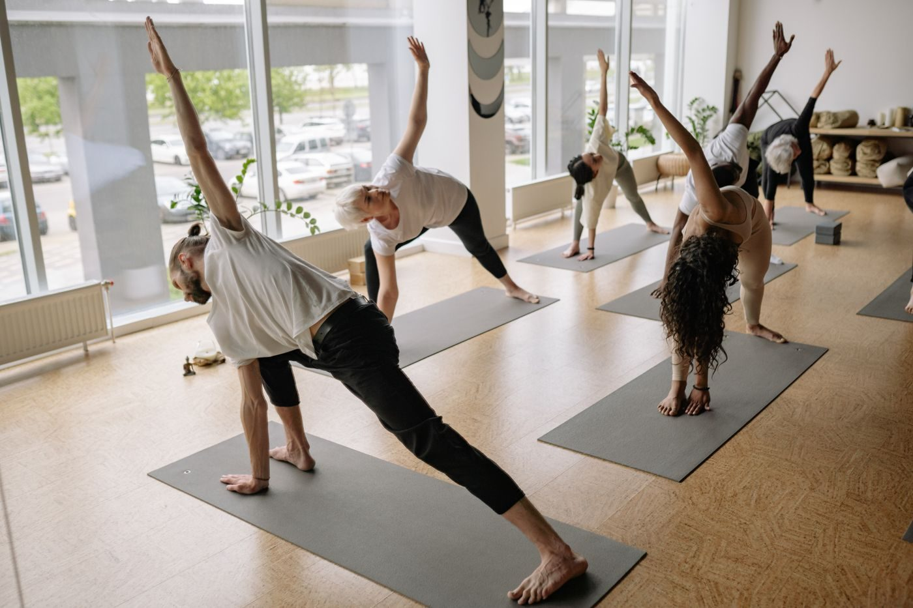
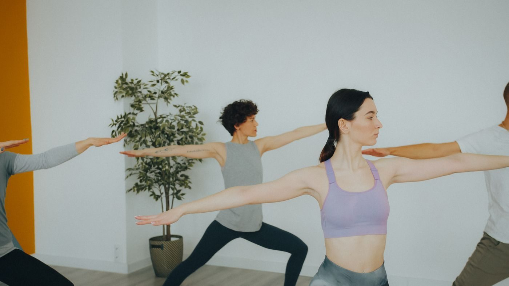
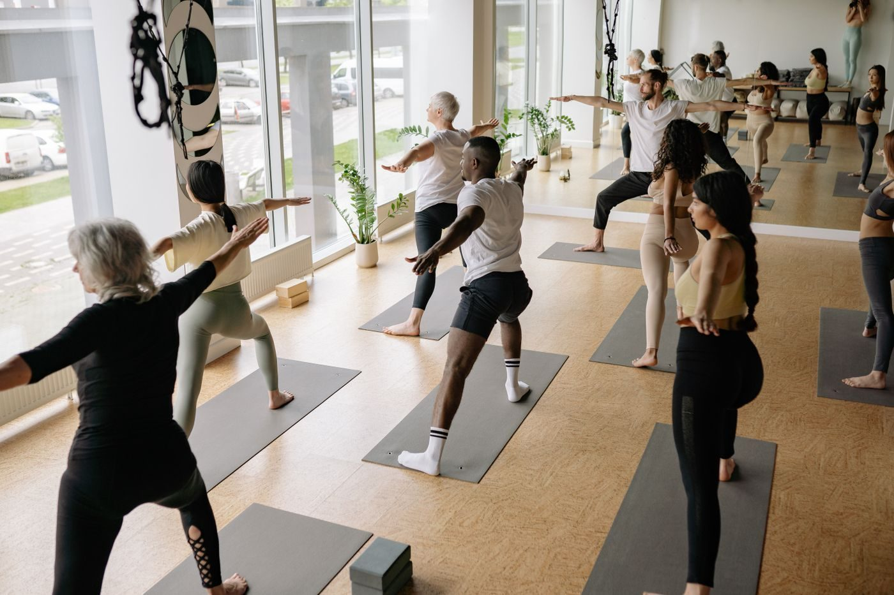

Yoga Center of Jackson
Yoga and Pilates classes for all levels in Jackson, with mats and props provided and walk-ins welcome.
About
Yoga Center of Jackson is a yoga and Pilates studio at 365 North Parkway, Suite 300, in Jackson, Tennessee. Classes are offered for all levels, with Iyengar-style props supplied, walk-ins welcome, and mats and props provided. The studio's own site is a thin, outdated single page, so this concept shows what a fuller site could look like.
Classes
What to bring
Nothing special: mats and props are provided, and walk-ins are welcome. Call (731) 664-6633 to ask about Friday or Sunday availability, which is not listed.
Gallery


All gallery photos are stock photos, labeled as such. They show the kind of work and setting described on this page, not this business.
Visit
Address: 365 N Pkwy Ste 300, Jackson, TN 38305
Hours: Monday 9:30 AM to 6:00 PM; Tuesday 8:00 AM to 6:30 PM; Wednesday 9:00 AM to 6:00 PM; Thursday 9:30 AM to 6:00 PM; Saturday class 8:00 AM to 9:00 AM. Friday and Sunday hours are not listed, so call to ask.
Phone: (731) 664-6633
Contact
Yoga Center of Jackson serves Jackson, TN. Questions? Call (731) 664-6633.